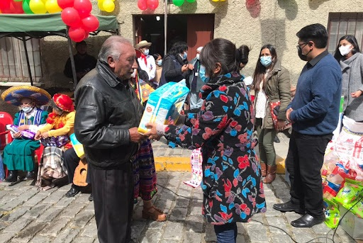

Sembrar conciencia, cultivar futuro
¿Por qué existe una ONG como Semillas del Cambio?
Porque hay territorios donde las oportunidades no llegan solas. Existen comunidades que enfrentan cada día desafíos ambientales, sociales y educativos, sin los recursos ni el acompañamiento necesario.
Nuestro rol es estar ahí, sembrando herramientas, generando redes y despertando conciencia. Trabajamos para que las semillas de transformación crezcan donde más se necesitan.
¿Para qué sirve una ONG en el mundo de hoy?
Para actuar donde otros no llegan, para escuchar lo que no se ve y para construir futuro desde abajo. Las ONG son puentes entre las personas, los recursos y las causas que importan.
En Semillas del Cambio creemos que una comunidad bien acompañada puede cambiar su destino, y que toda transformación empieza por una acción concreta.
DESTACADOS
NOSOTROS
Cultivamos educación, sembramos futuro
Semillas del Cambio es una organización sin fines de lucro que impulsa la conciencia ambiental y la educación transformadora en comunidades de todo el país.
Desde nuestra creación en 2018, trabajamos junto a escuelas, barrios rurales y organizaciones sociales para construir un presente más justo y sostenible.

Los proyectos son intervenciones puntuales y de alto impacto, realizadas en comunidades específicas o en fechas clave.